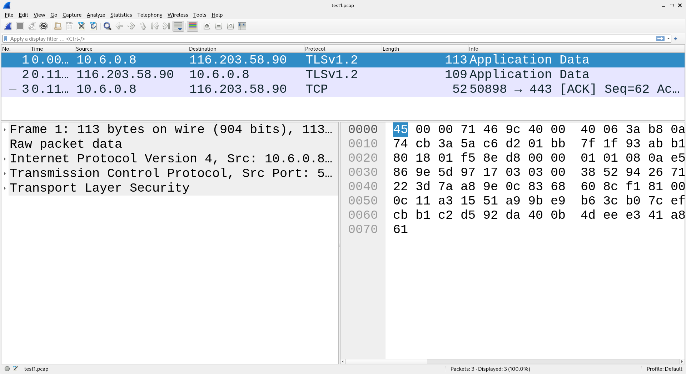
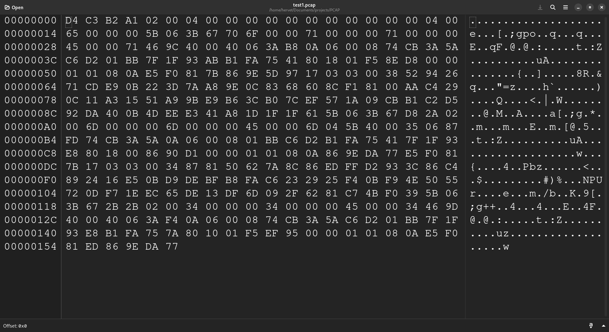
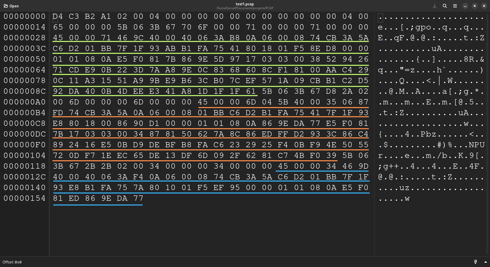
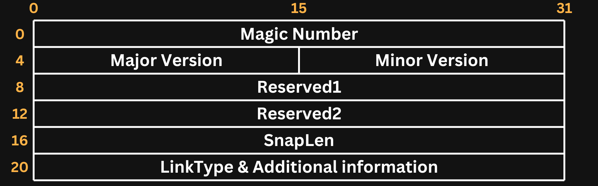

Last Updated : 18, Nov 2024
Click here to skip to the interesting part.
So this all started when I wanted to find a packet capture (PCAP) file of an STP negotiation and I had to jump through many hoops to find one to analyse with Wireshark. The lack of such a file or tools to generate it frustrated me and got me interested in the file structure to hopefully understand it well enough and maybe do something about this, be it minor, problem i had.
Turns out, it’s a very simple file structure and I found a great resource to help me in my quest; I stumbled upon this internet draft of the IETF’s Network Working Group. First thing I did was generating a PCAP file through Wireshark with three packets :
I exported it to the PCAP format and got ran it through a HEX editor :
Once that was done, I tried to find my 3 frames in all this :
Okay, so that was easy, only a few words to go through and understand; My thought process at first was as follows: this file must contain a header containing some information about the capture, so I isolated the first bytes in separate file and tried to do some more research and that’s when I stumbled upon the IETF’s draft, you can have more information about the header down below, but for the purposes of this rant you just have to know that a PCAP header is 24 bytes long and in this case we have :
D4 C3 B2 A1 02 00 04 00 00 00 00 00 00 00 00 00 00 00 04 00 65 00 00 00
0xD4C3B2A1 : This sequence identifies that packets’ timestamps are recorded in seconds and microseconds.
0x02000400 : Major and minor version of the format. So in this case : Major version = 2, Minor version = 4.
0x0000000000000000 : Reserved, must be ignored.
0x00000400 : SnapLen; maximum number of bytes captured from each packet. 1024 bytes in this case.
0x65000000 : LinkType and additional information.
All I needed to figure out was the few bits before each packet capture and their meaning. The answer was again found in that great article from the IETF.
Let’s take the first packet as an example and see what each bit in the packet record stands for :
0x5B063B67 : Timestamp (in seconds).
0x706F0000 : Timestamp (in micro-seconds [remember the Magic Sequence]).
0x71000000 : Captured Packet Length.
0x71000000 : Original Packet Length.
And that was today's story, hope you found the process interesting. Now let’s explain the PCAP file in a more rigorous way.
Packet CAPture files are a common way to store network traffic, it stores every byte of every packet seen by your NIC or in a network in general.
PCAP files are easily created and read by a variety of tools, the most famous of which is Wireshark.
PCAP files offer a standardized and structured way to store captured traffic, making it easier to transport, filter and examine.
All PCAP file start with a header that has the following structure :
So what does each field mean? Well, it is simple :
Magic Number : It can be assigned two value : 0xA1B2C3D4 to signify that the packet timestamps will be recorded in seconds and microseconds OR 0xA1B2C34D to signify that the packet timestamps will be recorded in seconds and nanoseconds.
Major Version & Minor Version : Specifies the version of the format used in the file, it is useful for identifying compatibility issues.
Reserved1 & Reserved1 : Should not be used and should be filled by 0s by the PCAP writer.
SnapLen : Specifies the Maximum number of bytes captured from each packet. Any excess will not be stored in the file.
LinkType & Additional information : identifies the link-layer type of the packet and could contain additional information.